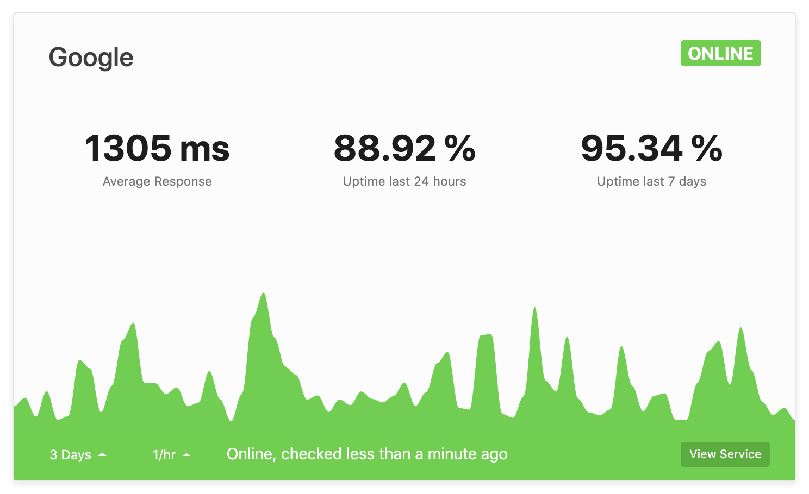
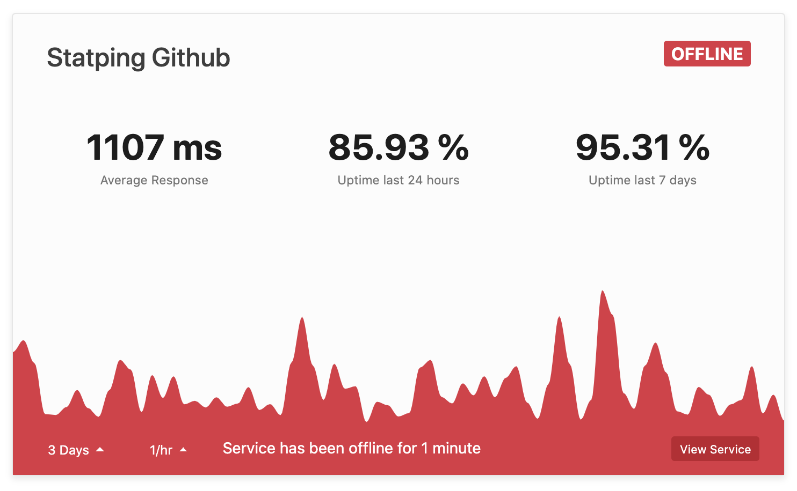
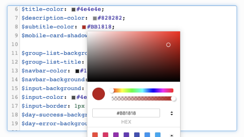
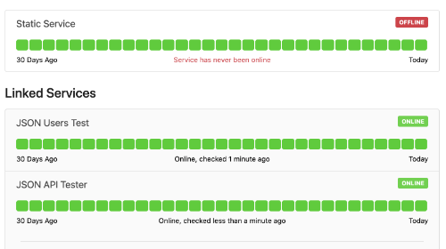
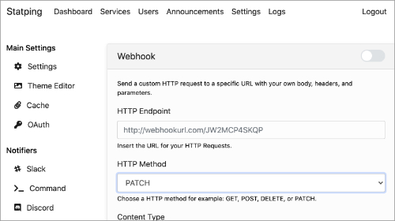
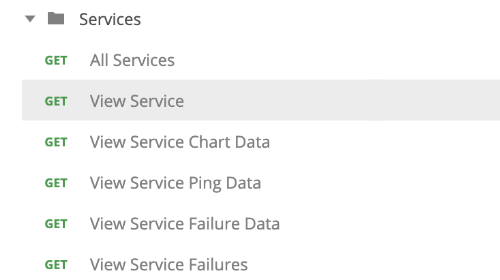
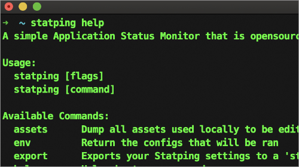

An open source server to monitor your web applications and all other HTTP, TCP, UDP, ICMP and gRPC services.

Visual Frontend
Receive notifications from many 3rd party platforms anytime one of your services becomes offline. 

Custom Styling
Match your status page with your own color scheme using Sass.

Service Groups
Group your services into specific categories

Simple UI
Receive notifications from many 3rd party platforms anytime one of your services becomes offline.Monitor your web services with ease.
Notifiers
Statping-ng has multiple notifiers so you can know when a service becomes offline as soon as it happens. We have already implemented Slack, Discord, Telegram, Emailing (SMTP), and many others.Slack
Discord
Telegram
Webhooks
Mobile Alerts
Emails
Open Source
Statping-ng will always remain open-source so we can all expand this awesome application to meet everyones needs. You can host your own Statping instance for free using Docker or just download the pre-built executable for Windows, Mac, and Linux.


Get alerts when a service is offline

RESTful API
Let Statping monitor your HTTP, TCP, UDP and gRPC services with an awesome status pageCustom Design
With SASS you can give your status page a custom design that fits your current website's branding.
